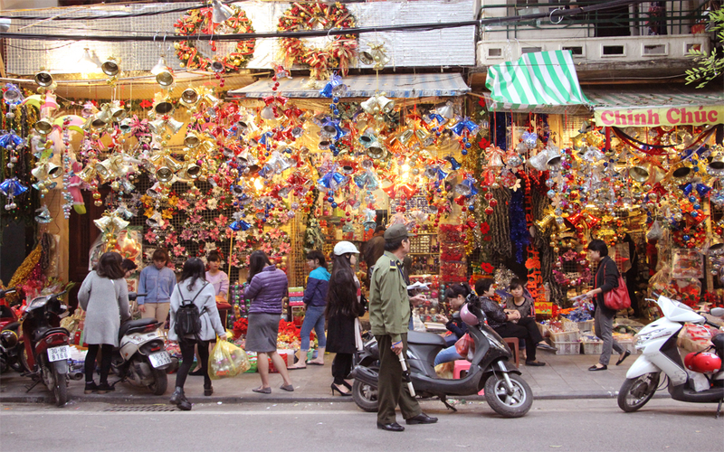
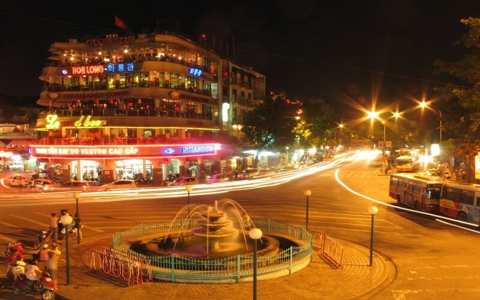
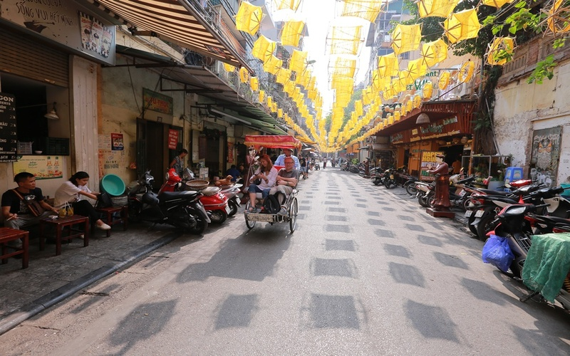

Cầu Thê Húc
Một trong những biểu tượng của Hà Nội ngàn năm văn hiến

Chùa Một Cột
Biểu tượng văn hoá ngàn năm văn hiến của Hà Nội

Chùa Trấn Quốc
Ngôi chùa cổ linh thiêng đẹp nhất Việt Nam
Vẻ đẹp của Hà Nội trong mắt du khách nước ngoài
Thủ đô Hà Nội, địa điểm du lịch có những điểm khác biệt rõ nét không lẫn với bất cứ đô thị nào trong cả nước và cả khu vực châu Á. Chính những điều khác biệt ấy đã làm nên một Hà Nội đặc trưng, tour du lịch Hà Nội trở thành một điểm đến đáng mơ ước của nhiều du khách trong và ngoài nước.

Đến với thủ đô Hà Nội, du khách sẽ cảm nhận ngay được sự nhộn nhịp của cuộc sống, sự đa dạng trong ẩm thực cùng bề dày văn hóa, lịch sử và sự thân thiện của người dân. Từ những ngõ ngách trong thành phố, những công trình từ thời Pháp, các quán sá vỉa hè với những món ẩm thực địa phương phong phú hay cách người Hà Nội sử dụng phương tiện giao thông cũng trở thành những ấn tượng khó quên trong lòng du khách khi đến với thành phố này.
Đi bộ trên những con phố đông đúc khi đến với Hà Nội, du khách sẽ thường xuyên bắt gặp những nụ cười thân thiện từ người dân nơi đây, nhưng nụ cười ấy đã khiến cho du khách nước ngoài cảm nhận dược sự nồng ấm, hiếu khách của người Hà Nội và khiến cho chuyến đi của họ trở nên thoải mái không khác gì ở quê nhà.
Hà Nội có nền văn hóa đầy bản sắc, luôn chờ du khách đến để khám phá. Muốn cảm nhận được một Hà Nội cổ kính thì du khách nên đến với những khu Phố cổ sôi động, náo nhiệt, tấp nập người mua, kẻ bán xen lẫn tiếng xe cộ, tiếng trò chuyện rôm rả, tất cả tạo nên một nhịp điệu cuộc sống rất riêng cho thành phố. Hay du khách vẫn có thể tìm thấy những nét đặc trưng của một Hà Nội xưa qua nhiều cửa hàng nơi những nghệ nhân làm đồ truyền thống như gốm, sứ, bạc, đồng...sinh sống và làm việc. Họ là những người giữ gìn và bảo tồn giá trị lịch sử, văn hóa của Hà Nội. Ngoài ra, du khách cũng có thể đắm mình trong không khí cổ xưa ở Hà Nội khi tham quan Văn Miếu Quốc Tử Giám, trường đại học đầu tiên của Việt Nam và là nơi thờ Khổng Tử.

Hà Nội cũng gây được ấn tượng với du khách nước ngoài hay khách du lịch trong nước bởi hình ảnh của những khách sạn Hà Nội mới, các cửa hàng đồ hiệu, nhà hàng sang trọng..nằm ở những con phố trung tâm. Chỉ cần đi dạo ở những tuyến đường chính du khách cũng có thể tìm thấy những nhà hàng sang trọng phục vụ từ món Âu cho đến món Á hay những quán cà phê thú vị được trang trí từ hiện đại đến cổ điển…
Lời giới thiệu
Hẳn bạn đã nghe rất nhiều về Hà Nội - Thủ đô hơn 1000 năm tuổi. Không chỉ nổi tiếng với lịch sử lâu đời, giàu bản sắc, văn hoá truyền thống dân tộc, vùng đất này còn được biết đến là một trong những địa điểm thu hút nhiều du khách trong và ngoài nước. Qua trang web này, chắc chắn bạn sẽ yêu nó ngay từ những thứ mà nó có, từ văn hoá, phong tục tập quán, con người, nhịp sống cho đến cảnh vật và cả nền ẩm thực hấp dẫn mà không nơi nào có được.

Hà Nội Xưa
Người Hà Nội vẫn tự hào về những dãy phố lâu đời, nơi gửi gắm bao hồi ức, hoài niệm xưa cũ, nét cổ kính Hà Nội vẫn vẹn nguyên giữa thành phố đang vươn mình thay đổi quá nhanh

Hà Nội Mới
Sau 64 năm giải phóng Thủ đô, Hà Nội nay đã và đang vươn mình trở thành một thành phố hiện đại bậc nhất khu vực và xứng đáng là trái tim của cả nước.

36 Phố Phường
Hà Nội 36 phố phường là cái tên đã được hình thành từ thời Lý Trần. Đó là khi các khu sinh hoạt dân cư buôn bán dần bắt đầu hình thành, dân cư từ khắp nơi tụ tập lại và trở thành khu vực sầm uất nhất kinh thành thời bấy giờ.
